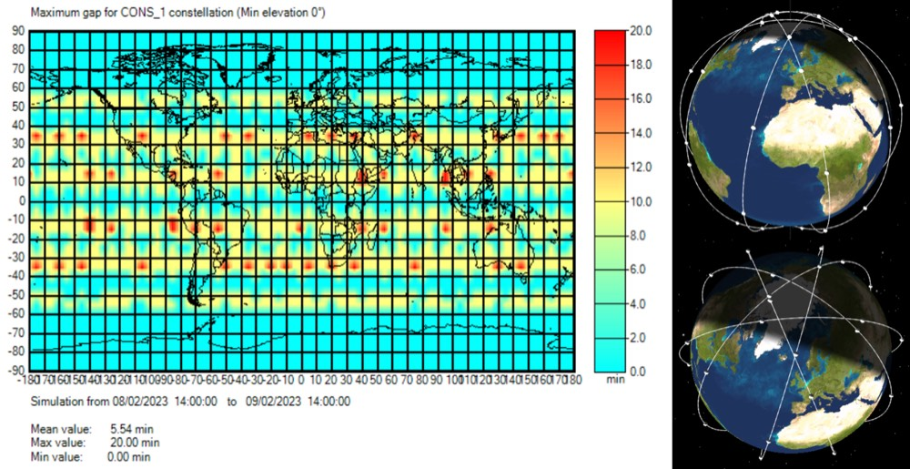
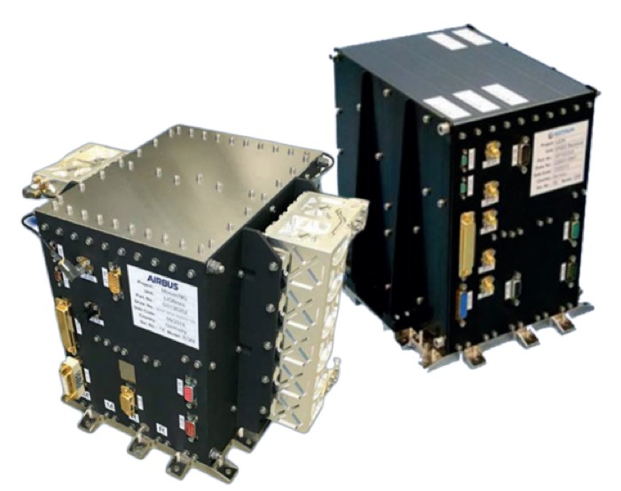
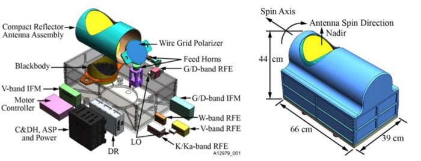
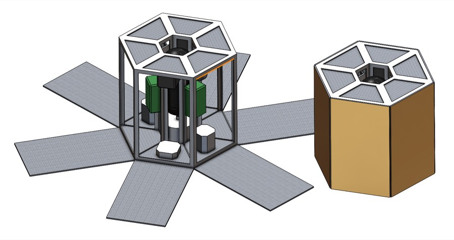
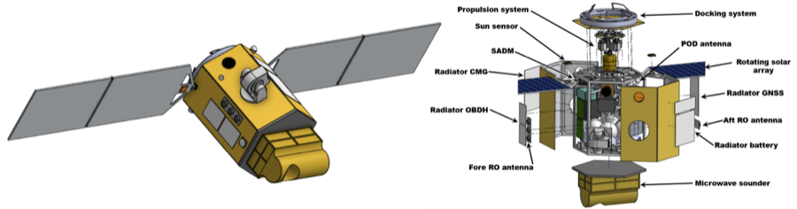

Integrated Team Project · ISAE-SUPAERO
COMETS: a constellation for global weather coverage

The brief
Design a satellite constellation capable of meteorological measurement using two complementary instruments: GNSS radio occultation (GNSS-RO) and a microwave sounder (MWS). Weather data matters for climate research and for tracking hazardous events like hurricanes and typhoons; the driver here was better spatial and temporal resolution than existing coverage, plus reliability.
My contribution
On a six-person team I owned two subsystems: AOCS (attitude and orbit control) and mission analysis.
AOCS. The pointing budget was derived from the payload rather than assumed — BOWIE-M's specification sets what the platform has to deliver, giving a required pointing accuracy of \(0.027^\circ\) and an agility of \(0.809^\circ/\mathrm{s}\) against a mission need of \(0.44^\circ\) and \(0.33^\circ/\mathrm{s}\). That second figure has a physical origin worth stating: at 7.533 km/s orbital velocity, holding the instrument on a fixed ground target costs \(0.33^\circ\) of slew every second. From there I traded actuators — reaction wheels against control moment gyros against magnetorquers, where the CMG avoids the wheel's desaturation problem by steering its momentum vector instead of spinning up — and sensors, including fibre-optic against hemispherical resonator gyroscopes, then sized the set and produced the subsystem layout and its mass and power budget.
Mission analysis. Launcher trade-off and SSO capability, launch strategy and configuration under the fairing, and the early orbit phase. Then the orbitography that fixes the mission: altitude and inclination selection, and the Walker constellation geometry. Finally station-keeping — quantifying how orbital disturbances perturb each orbital element and what that demands of the propulsion budget — along with constellation lifetime and end-of-life deorbit.
Mission design
The coverage requirement — the whole Earth in 20 minutes or less — sets the constellation geometry. A Walker configuration of five planes with eight satellites each meets it.
Orbit choice follows from second-order concerns rather than coverage alone. Sun-synchronous orbits give consistent illumination, which both simplifies the solar array sizing and makes thermal design tractable — two subsystems bought with one decision. The 650 km altitude is a compromise: high enough that drag perturbations stay small and lifetime-extension manoeuvres are largely unnecessary, low enough to meet the instrument requirements. That altitude implies an inclination near 98°, reachable by a launcher like Ariane 6.
Instruments
GNSS-RO reads radio signals from GNSS satellites as they pass through the atmosphere, recovering temperature and water-vapour profiles from how the signal bends. The chosen unit is Airbus's LION 1000 series, small, multi-constellation (Galileo, GPS, Glonass, Compass) and rated for 15 years — comfortably beyond the mission's 10-year duration.
Microwave sounding measures the atmosphere's thermal emission across frequencies to recover its vertical temperature and moisture structure. Ball Aerospace's BOWIE-M was selected at TRL 6 — a deliberate choice to keep technology risk low.


COCON: sharing a platform across projects
The part of this project worth dwelling on is not the spacecraft but the organisation around it. COCON was a student initiative across the Master TAS ASTRO cohort to build one common platform serving several different constellation projects at once. The argument was twofold: more people working each subsystem produces more robust results, and a single production run lowers cost across every mission using it.
The consequences are visible in the design. The hexagonal primary structure was driven not by COMETS' needs but by another constellation's optical instruments and their pointing-accuracy requirements. Aluminium for the primary structure, carbon/epoxy composite for appendages and tanks. Four Exotrail micro-XL thrusters, in a modular arrangement that allows more to be added.

COCON also supplies a separate Mover constellation, designed by another ITP group, which COMETS uses instead of its own propulsion for three distinct jobs: phasing during the early orbit phase, deorbiting at end of life, and RAAN manoeuvres to extend constellation lifetime if a satellite fails. Outsourcing those manoeuvres is what lets the COMETS propulsion budget stay small.
The satellite
| Orbit | Circular SSO, 650 km, \(i \approx 98^\circ\) |
|---|---|
| Instruments | MWS: BOWIE-M (Ball Aerospace) · GNSS-RO: LION 1000 series (Airbus) |
| Mass | < 350 kg |
| Architecture | Hexagonal |
| Lifetime | > 10 years |
| Avionics | Spaceteq OBC-GR712 (LEO3FT processor) |
| Communication | Laser: Condor MK3 |
| Thrusters | Exotrail micro-XL |
| Battery | SAFT VES16 Li-ion |
| Solar array | 3G30C cells (Azure Space) |

Why it mattered
A meteorological constellation of this kind is uncommon, and the case made for it was strategic as much as technical: it would give Europe sovereign access to its own global weather data. The full study covered mission and environment analysis, instruments, thermal control, AOCS, propulsion, communications, on-board data handling, power, mission phases and the final mass and cost budgets.